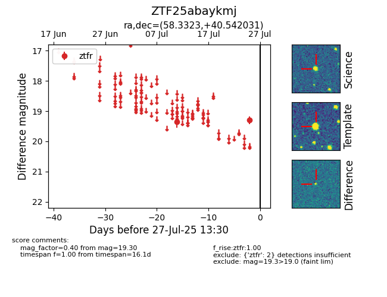

Target ZTF25abaykmj at 2025-07-27 13:30, see:
FINK: fink-portal.org/ZTF25abaykmj
Lasair: lasair-ztf.lsst.ac.uk/objects/ZTF25abaykmj
ALeRCE: alerce.online/object/ZTF25abaykmj
alt names
ZTF25abaykmj (ztf,fink)
coordinates:
equatorial (ra, dec) = (58.3323,+40.54203)
galactic (l, b) = (156.3365,-10.24637)
photometry
last ztfr=19.30
2 ztfr detections
